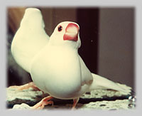

|
文鳥との日々
行方昭夫

わたしたちの家で八年間、家族の一員として起居をともにしていた文鳥のピーコあるいはピーちゃんが亡くなってから、ずいぶん年月が経過した。だが、そのかわいい姿は目を閉じれば鮮明に浮かんでくるし、耳をすませばピーピーと鳴く声が響いてくる。
四分の一世紀ほど前のある日、開いていた窓から飛びこんできて、わたしの肩にとまったときから、ピーコとの生活が始まった。とてもよく慣れているので、どこかの家で飼われていたと思われた。さっそく手元にあった鳥かごに入れて、近所の家を訪ねてみたが、飼主は見つからなかった。それでわが家で飼うことにしたのである。
最初の数日間はピーコはとても用心深く、臆病でさえあった。わたしか妻の肩にとまって大きなまるい目であちこち注意深く観察していた。わたしたちは初めから、放し飼いで自由に飛びまわるようにしていたのだが、あまり飛ぼうとしない。
少しずつ新しい環境に慣れ、新しい家を好み、わたしたちを友人とみなすようになった。それまで手乗り文鳥を飼ったことがなかったわたしたちは、ピーコが賢く愛らしく、元気いっぱいで、しかも何となく面白い生きものだと知り、嬉しかった。
小鳥がこれほどまで人間の友たりうるというのは喜ばしい驚きであった。こんなに身近に鳥の一挙手一投足を観察でき、仲間が恋しくなったピーコが、飛んできて肩にとまってくれると、いやなことをすべて忘れさせてくれる効果があった。犬や猫だけでなく、小鳥も十分に癒しに役立ってくれるのだ。
春のある日、驚くべきことがおこった。ピーコが妻の着ていた薄いセーターの中に入りこんで出てくると、一センチほどの卵が残っていたのだ。雌雄は見分けられぬので、それまでは雄とばかり思っていた（今も「彼」と呼んでいる）。元気一杯に飛びまわるし、少し乱暴なところもあったからである。これを手はじめに、全部で五十個ぐらいの卵を生んだ。生むのは大変らしく、生んでしばらくは目の周囲の輪、脚などピンク色が薄くなり、文鳥の特徴である大きなくちばしの濃い紅色まで少し色あせる。どうしたものかと、小鳥の病院で相談すると、かわいがっている証拠です、という答えだった。生まぬようにするには、ピーコに構わないようにするしかないという。これは無理な話だ。でもそのためにピーコの寿命を短くしたと思うと、心が痛む。
人間と同じく、ピーコも食事を楽しんだ。水と鳥用のあわやひえなどの餌はいつでもとれるようにしてあったが、ぼくらの食事のテーブルで、食べものをあれこれつまみ食いするのがピーコの最大の楽しみであった。好物は、カレーやシチュー、スキヤキ、そば、枝豆、ゆで卵、ほうれん草。デザートはみかんやスイカ。皿や碗の間を跳んだり走ったりして、あれこれ食べてみるのが、嬉しかったらしく、よく鳴声をあげていた。ピーコの姿のない食卓はさびしい。
「鳥のように自由自在に」という慣用句があるくらいで、ピーコにとって一番いやなのは鳥かごに入れられることだった。しかし、わたしたちの睡眠中や、外出時は、どうしてもかごに入れておくしかなかった。
ところが、着替えをはじめるやいなや、つかまらないようにと、天井近くに飛びあがり、いくつもある額縁の上部にとまってしまう。呼んでも知らぬ顔である。踏み台にのって手をのばすと、もうちょっとという瞬間に飛び去る。とらえるのが一番簡単なのは、ピーコが水を飲んだり、餌をついばんでいる時だ。しかし、これはできない。いつのまにか、ピーコとわたしたちの間に、暗黙の協定ができていて、急いで外出する場合に、食事中の彼をとらえようとしようものなら、キッとした目つきでこちらをにらむ。まるで「お食事中だよ！」と言わんばかりだ。そこで、外出のずいぶん前に、さっとつかんでかごに入れることになる。
さて、外出から帰ってからが大変である。怒っている彼をなだめるために、卵の煮付けやきゅうりをやったりする。長時間留守した時は、ドアをあけた瞬間、彼の非難めいた声が聞こえてき、その後も、十分に愛しているという証拠を要求する。両手に包み込んで、体中を何回もやさしくキスしてやる。そうしている内に、満足げにあお向きの姿勢で寝てしまう。
自立心が旺盛で、自己主張するのもかわいい。妻とわたしがスクラッブルという単語ゲームに熱中していると、飛んできて、盤の真ん中に立ち、並べたパイをけちらす。彼の存在を忘れていたことを怒っているのだ。
こんな生活を八年間ともにしてから病死してしまった。心にぽっかり穴があいた。彼の写真を飾り、思い出に浸り、彼からもらったものに報いるだけのお返しができたか反省する。そしてこういう文章を書く。
ゲーリー・コワルスキー『癒される日々――ペットの死をこえて』（晶文社）を読まぬうちから、そこで説かれた助言を、わたしはすでに実行していたようだ。
行方昭夫（なめかた・あきお）
1931年東京生まれ。東洋学園大学学長。東京大学名誉教授。著書に『英文快読術』（岩波書店）、『英語のこころを読む』（筑摩書房）。訳書にヘンリー・ジェイムズ『ある婦人の肖像』（岩波書店）、スー・ハリソン『姉なる月』、『兄なる風』（ともに晶文社）などがある。大の動物好きで、テディベアのコレクターとしても知られる。
|